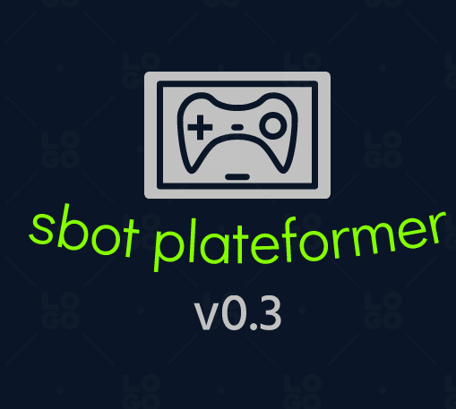

main my contacts my projects articles
the sbot plateformer video game is in development! (June 2022)
Some time ago, I started to create a video game, using the godot game engine (if you are interested).
It is not yet available for download, but you can become a beta tester, just contact me by mail or by discord! :)
I also plan to place this project as developed by Malwprotector!

I've updated the Malwprotector project! (June 2022)
I have completely redone the Malwprotector website from scratch.
Some features are not finished,
but I am very proud that the project is back on track!
If you want to become a member, do not hesitate to contact me,
I will provide you with more information!
Malwprotector Update tool, save your data! (April 2022)
Malwprotector Save Tool is a utility that allows you to make backups to an external disk.
Warning, it is in test version, major problems may occur.
Let me know your feedback on my email address contactgillionmartin@gmail.com !
I have created a interactive map to find bins in Mons Belgian city! (February 2022)
With this map, you can find the bins of Mons!
Multiple navigator, surf the web with many browsers! (December 2021)
MultiN is a website that you can eventually pin as your homepage;Malwprotector, protect your computer.(2019-2022)
Malwprotector was basically an antivirus (mainly to protect a windows computer)
and online help organization. However, I confess that I have a little abandoned the idea of AntiVirus, mainly due to the fact that
Malwprotector was experiencing malfunctions with Windows 11. But some utilities are still very efficient, and the help center, the logo
and the copyright of Malwprotector are still used! One utility that is a very good tool is Malwprotector Shortcut Virus Remover which is
a tool for removing viruses from external disks, and all this without deleting any files!
Thank you all for your continued trust in Malwprotector. I do my best to provide quality programs and very good help.
A pong game with levels!(November 2021)
I also recently uploaded a pong game that is supposed
to have many levels - it currently only has 3 :)
You can still check it out here!
CPU stat, watch your CPU usage at any time on your screen ((December 2021)
CPU stat is a handy utility that allows you to observe your CPU usage,
all without having to open the task manager. For example, you can move it to the bottom right
of your screen and see your CPU usage at any time!